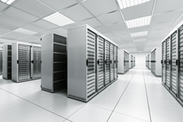

O surgimento do computador na sociedade moderna possibilitou um aumento até então inimaginável da capacidade das empresas de realizarem suas atividades de modo mais eficiente e rápido. A automatização das tarefas por meio desse dispositivo possibilitou que a empresa dirigisse seus esforços para as suas atividades de realização de negócios, em vez de ficar gastando tempo na realização de tarefas repetitivas e desnecessárias.
A automação dos processos por meio da tecnologia também permitiu a substituição do homem pelas máquinas para a realização de tarefas perigosas e desgastantes. Os computadores realizam as atividades com maior precisão segurança.
Tudo isso fez com que as empresas ficassem cada vez mais dependentes dessa tecnologia para continuar sobrevivendo e realizando suas atividades diárias.
A disponibilidade dos recursos de tecnologia da informação, ou seja, redes de computadores, servidores, sistemas e aplicações é muito importante para que a empresa não tenha as suas tarefas comprometidas.
Infraestrutura e redundâncias
A alta disponibilidade dos ambientes de tecnologia da Informação está ligada diretamente à crescente dependência que as organizações têm dos seus sistemas de informática, uma vez que eles desempenham um papel crítico para a realização de suas atividades e serviços. Dessa forma, empresas seguras nunca podem ter os seus ambientes fora de operação.

Portanto, os equipamentos de apoio, tais como Nobreaks, geradores, condicionadores de ar e refrigeração devem ter capacidade ociosa, além de equipamentos de reserva para o caso de falhas.
O sistema de proteção que visa dar alto grau de confiabilidade na proteção das informações armazenadas em servidores de rede é conhecido por Tolerance Faults.
A ideia principal da tolerância a falhas é manter o serviço funcionando mesmo com a presença de uma falha.
O que é uma falha?
Para abordar o assunto tolerância a falhas, faz-se necessário o entendimento do que vem a ser uma falha (Fault) em inglês. Podemos explicar a palavra falha como sendo a ocorrência de um problema, ou defeito (Failure) em inglês, ou simplesmente um erro.
Nesse meio costuma-se dizer que as falhas são inevitáveis, pois com o passar do tempo os componentes físicos das máquinas e equipamento envelhecem, bem como sofrem desgastes pelo uso contínuo e também com interferências externas, sejam elas ambientais ou humanas.
Existem falhas que podem ter sido causadas de forma acidental, assim como outras que podem ter sido causadas por parte de agentes internos ou externos da empresa com uma intenção maliciosa para provocar danos à infraestrutura da tecnologia da informação.
Algumas falhas em ambiente de tecnologia da informação
Alguns dos tipos de falhas mais comuns dentro do ambiente de tecnologia da informação serão citados a seguir.
- Problemas na rede elétrica pela queda total ou parcial do fornecimento de energia elétrica.
- Problema de acesso à rede de dados por falhas de um equipamento concentrador (Switch, hub, Roteador).
- Problema de hardware do servidor (fonte, discos, placa de rede, memória, outros componentes internos).
- Problema no software em razão de falha no sistema, aplicação, sistema operacional, problema com vírus e códigos maliciosos.
- Problema no ambiente (Data Center), em consequência de desastres naturais, incêndios e ações criminosas.
A disponibilidade de um ambiente ou equipamento no mercado atual é medida em "noves", ou seja, um nove apenas significa a disponibilidade de 90%, ou seja, caso ocorra algum problema, o serviço ou equipamento ficará indisponível até 10% do tempo.
Conforme vão sendo adicionados outros noves, a tendência é que o período de tempo da indisponibilidade vá diminuindo, e, para que isso seja conseguido, a quantidade de recursos extras para manter o ambiente funcionando terá que ser aumentada.
Com dois noves estaríamos aumentando a disponibilidade para 99%, o que significa que teríamos apenas 1% de indisponibilidade e isso seria muito menor do que a primeira situação. Esse 1% em um ano, porém, significaria 3,65 dias e em um mês 7,20 horas.
Agora imaginemos no dia de hoje, em que um servidor de arquivos ou banco de dados ou até mesmo da internet ficasse indisponível por 7 horas. Será que teríamos algum impacto no negócio da empresa?
Dessa forma, pode-se verificar que durante os processos de análise de risco, deve ficar muito bem claro qual a importância e a necessidade de um ativo de TI para a realização dos negócios de modo que possam ser investidos os controles necessários para deixá-lo sempre funcionando.
Caso o negócio aponte para a necessidade de aumentar mais um nove, ou seja, 99,9% de disponibilidade, a indisponibilidade nos anos cairia apenas para aproximadamente 9 horas em um ano e 40 minutos em um dia. A partir desse cenário, a necessidade de aumentar os recursos de redundância aumenta consideravelmente e começa a não contar apenas com a sorte de algo de ruim não acontecer no ambiente, mas sim colocar novos dispositivos que ajudem a resolver o problema caso a falha ocorra. Podemos citar como exemplo a adoção de uma segunda fonte de energia no caso de servidores ou de um segundo link de internet, ou até mesmo de uma segunda placa de rede instalada para ser reconfigurada mais rapidamente no caso de falha física da primeira, sem a necessidade de ter de desligar o servidor para fazer a troca e depois reinicia-lo para fazer a configuração.Deve-se lembrar de que alguns servidores, além do processo normal de desligamento, necessitam realizar algumas ações de gravação em tabelas específicas, como é o caso dos bancos de dados e correio eletrônico, e esse tempo fará com que o período da indisponibilidade demore ainda mais.
Quando a complexidade do ambiente fica mais crítica e existe a necessidade da implementação de mais um nove, tornando-se um sistema com índice de tolerância a falhas de 99,99%, ou seja, quatro noves, o tempo de indisponibilidade do ambiente pode cair para aproximadamente 50 minutos em um ano e cinco minutos em um mês.
Nessa hora você deve estar pensando: "Como você é pessimista, isso é muito difícil ocorrer e, se ocorrer, dá para aceitar essa parada". Responderíamos: "Tudo bem, pense apenas em um sistema de computadores que é responsável por controlar o fluxo de ar para dentro de um ambiente ou até mesmo um sistema que controla o batimento do coração de uma pessoa dentro de uma UTI. Acreditamos que esses cinco minutos podem representar muito mais do que a perda de um negócio".
Níveis de tolerância a falhas
Para facilitar nossos estudos, dividiremos a tolerância a falhas em três níveis, sendo eles: sistemas que necessitem de uma disponibilidade, básica, alta e contínua/ longa operação.
Disponibilidade básica
Dentro dessa categoria colocaríamos os sistemas/equipamentos que podem ter o seu processo interrompido durante um período curto de tempo e que não causam impactos significativos para os processos de negócio da empresa. Podem ser enquadrados dentro da categoria dos três noves, que possibilitariam uma parada de até um dia comercial durante o ano.
Alta disponibilidade
Para receber esse rótulo, o sistema tem que ter a necessidade de funcionar com um período muito baixo de indisponibilidade e, geralmente, são servidores ou sistemas de missão crítica para as empresas. Assim, por causa do impacto de uma parada é que esses sistemas/equipamentos podem trazer para a empresa os investimentos. Com a redundância, são facilmente explicados e justificados por parte da área de tecnologia da informação.
Para esse tipo de ambiente, o sistema /equipamento deve continuar a operar com toda a sua funcionalidade, mesmo com a presença de algum tipo de falha, e, às vezes, isso é conseguido com a existência de um segundo equipamento ou recurso que entrará em funcionamento logo que o principal venha a falhar sem que haja a necessidade de alguma intervenção por parte de um operador.
Disponbilidade contínua / longa duração
Para se enquadrar dentro dessa categoria, o sistema deveria ter de disponibilidade no mínimo quatro noves, ou seja, 99,99%, chegando, às vezes, ao absurdo de nove noves 99,9999999, ou seja, pode ficar parado alguns segundos durante o ano ou mês.
"Nossa, que absurdo!" Tudo bem, pense em sistemas ou equipamentos em que a sua interrupção afete milhares de pessoas ao redor do mundo e que o custo para a sua manutenção seja absurdamente elevado (um exemplo básico: um satélite"). Não precisamos dizer mais nada.
O processo de redundância pode ocorrer por meio da utilização de múltiplas unidades de hardware que aumentarão a disponibilidade de um recurso qualquer, e também a utilização de múltiplas versões de software ou até mesmo múltiplas cópias de dados.
Em muitos casos faz-se necessário que sejam implementadas medidas que farão os dados e as informações coexistirem simultaneamente em dois lugares diferente e ao mesmo tempo.
Quando estamos nos referindo ao que foi falado anteriormente, estamos dizendo sobre a necessidade dos dados e das informações ficarem replicados em máquinas e lugares diferentes como forma de, além manter a disponibilidade, também implementar uma contingência no caso de indisponibilidade do ambiente.
A replicação pode ser implementada localmente ou em diferentes locais, e as soluções de replicação podem ser dependentes dos sistemas operacionais nos quais os sistemas estão instalados.
A possibilidade de implementação da virtualização também deve ser pensada como medida para aumentar a tolerância a falhas de um ambiente, pois os benefícios da virtualização estão relacionados ao fato de que novos equipamentos poderão ser adicionados ao ambiente de produção sem que haja a necessidade da parada da rede, além de possuir um gerenciamento mais fácil, ou seja, possibilidade de criação, eliminação ou expansão de novas máquinas de acordo com as necessidades da empresa.
Muitas vezes a empresa não possui recursos próprios para implementar a alta disponibilidade por si mesma e resolve transferir esses problemas para terceiros. Essa pode ser uma saída, mas não basta apenas transferir o problema, é necessário verificar se a empresa que assumiu a resolução dele está fazendo isso da melhor forma possível e de modo que a empresa não tenha problemas futuros.
Quando falamos em transferir o problema, estamos nos referindo aos ANS (Acordo de Nível de Serviços) ou SLA (Service Level Agreement), que podem ser feitos com terceiros e que terão a responsabilidade de implementar as medidas de tolerância a falhas. Dentre essas medidas, temos:
- MTTF – Mean Time To Failure – Essa taxa mede o tempo esperado até que ocorra a primeira ocorrência de um problema ou defeito.
- MTTR – Mean Time To Repair – Essa taxa mede o tempo médio esperado para que ocorra o reparo de um sistema ou processo.
- MTBF – Mean Time Between Failure – Essa taxa mede o tempo médio esperado entre a ocorrência dos defeitos de um sistema ou processo.
- MTTSR – Medium Time To Service Repair – Essa taxa mede o tempo médio necessário para reparo de um componente ou serviço.
É importante que as empresas, após pensar na necessidade da alta disponibilidade, tenham em mente que a adoção de procedimentos e processos que viabilizam a implementação desse tipo de segurança, não seja feito apenas uma única vez. Faz-se necessário que esse processo seja feito continuamente, implementando o conceito de PDCA (Plan, Do, Check e Action) existente dentro dos desenvolvimento de projetos.
A ideia principal é que sejam feitos os planejamentos (PLAN) das medidas de alta disponibilidade, depois é necessário que eles sejam implementadas (DO), logo em seguida, passem a ser monitorados (CHECK) para verificar sua eficiência, e, de tempos em tempos, que o processo da implantação da alta disponibilidade seja melhorado a fim de implementar contingências (ACTION) para aumentar a segurança da solução.